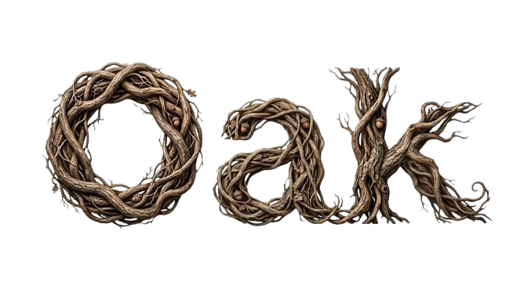

CRM · oak.carvalhou.tech
Oak — o CRM que trabalha pela sua agenda
Leads organizados num funil visual, conversas centralizadas e follow-up que não depende da memória de ninguém. Feito pra clínicas e negócios de horário marcado.
- Funil Kanban de leads, do primeiro contato ao fechamento
- Captura de leads pelo site e pelo WhatsApp
- Reativação automática de leads frios em breve
- Mensagens prontas por nicho: retorno, aniversário, no-show em breve